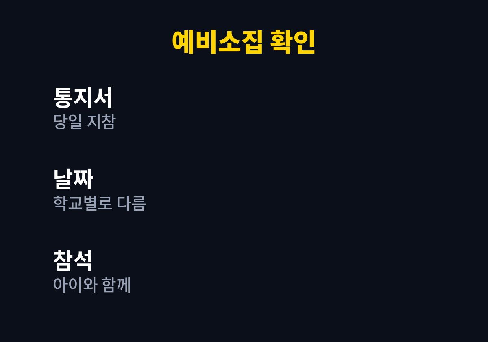
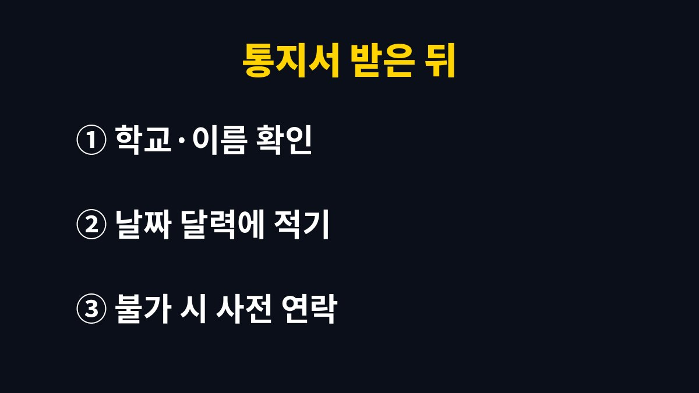

초등학교 예비소집은 취학통지서를 받은 보호자가 아이와 함께 지정된 학교에 직접 찾아가는 절차이며, 날짜와 시간은 학교마다 다르다.
2027학년도 입학 대상은 2020년생이고, 일정은 취학통지서에 딸려 오는 학교 안내문에서 확인한다.
2026년 11월 기준으로 확인한 자료에서는 전국 공통 날짜를 찾지 못했고, 그래서 이 글은 날짜 대신 헷갈리기 쉬운 부분을 다룬다.
일부 지역에서는 취학통지서를 온라인으로 제출하는 서비스를 운영한다.
서울시가 2023학년도에 안내한 자료에는 온라인 제출을 했더라도 예비소집일에 아이와 함께 반드시 참석해야 한다고 적혀 있다.
온라인 제출은 서류를 대신할 뿐 방문을 대신하지 않는다.
아이가 같이 가야 하는 이유도 여기에 있다.
예비소집은 학교가 취학 대상 아이를 직접 확인하는 자리라서 보호자 혼자 서류만 내는 방식과는 다르다.
아이가 낯선 학교 건물을 한 번 밟아 보는 것은 덤으로 얻는 경험이다.
예비소집은 학교별로 정해진다.
옆 동네 학교가 이미 끝났다는 소식이 들려도 우리 학교의 날짜는 다를 수 있다.
통지서와 함께 온 안내문의 날짜가 기준이다.
친구 부모에게 들은 날짜를 믿고 움직이면 엇갈리기 쉽다.
연락 없이 오지 않으면 학교가 아이의 소재와 안전을 확인하려고 보호자에게 연락할 수 있다.
미리 학교에 말하고 다른 날짜를 잡으면 이런 번거로움이 없다.
출근이나 형제 일정 때문에 어렵다는 사정은 학교에 흔한 이야기일 것이다.
사정을 설명하기 전에 날짜가 지나 버리는 쪽이 훨씬 곤란하다.
출근 시간과 예비소집 시간이 겹치는 집이 많다.
안내문을 받은 날 바로 달력에 적어 두면 휴가나 시간 조정을 미리 할 수 있다.
통지서가 보이지 않는다고 당황할 필요는 없다.
온라인으로 먼저 받은 집은 종이 통지서가 늦게 도착하기도 하므로, 안내문에 적힌 학교 번호로 전화해 날짜를 물어볼 수 있다.
표에 적은 네 가지만 챙기면 당일 현관에서 서류를 찾느라 서성이는 일은 줄어든다.
| 확인할 것 | 어디서 확인하나 | 메모 |
|---|---|---|
| 취학통지서 | 우편 또는 온라인 안내 | 당일 지참 |
| 예비소집 날짜·시간 | 통지서와 함께 온 학교 안내문 | 학교마다 다름 |
| 배정 학교 | 취학통지서 | 학교 이름과 주소 확인 |
| 추가 서류 | 학교 안내문 | 있는 경우에만 준비 |


1년 조기입학이나 입학 연기를 신청하는 경우에는 예비소집과 별개로 기한이 있다.
서울시 2023학년도 안내에서는 그 기한이 2022년 12월 30일까지였고 거주지 동주민센터에 신청하도록 했다.
이 날짜는 해마다 달라질 수 있으니 올해 기한은 주민센터나 교육청 안내로 확인해야 한다.
그 기한 이후에는 취학유예 절차에 따라 학교장에게 신청하는 방식으로 바뀐다고 안내되어 있었다.
아이의 입학 시기를 고민하는 중이라면 예비소집 날짜를 기다리지 말고 통지서를 받자마자 가족끼리 방향을 정해 두는 편이 낫다.
신청 창구가 주민센터에서 학교로 바뀌는 시점이 있어서 며칠 차이로 절차가 달라질 수 있다.
통지서가 오기 전에는 날짜를 알 수 없으니 우편함과 학교 누리집 공지를 가끔 확인한다.
통지서가 아직 오지 않았다면 주소지 주민센터에 문의하는 것이 가장 빠르다.
다음에 할 일은 안내문에 적힌 날짜를 달력에 적는 것 하나다.
참고 자료: 서울특별시 「2023학년도 취학통지서 온라인 제출 서비스 실시」(2026년 11월 확인)
※ 2026년 기준 공식 자료를 바탕으로 정리한 일반 정보이며, 아이의 발달이나 건강에 걱정이 있다면 소아청소년과 등 전문가와 상담하길 바란다.